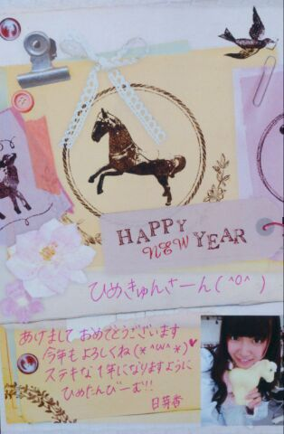
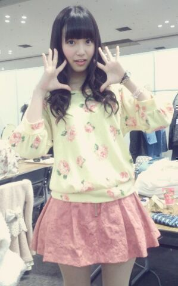
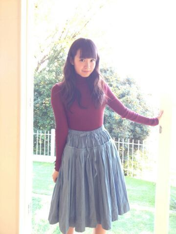

１年間 ありがとうございました！

ひめたんからひめきゅんさんへ
年賀状書いたよ∩(＊^ω^＊)∩
ポストに出すのめんどくさいから
写めでごめんね♪♪
受け取ってくださーいなっ
＼ 忘れる前に個握の私服 ／

トップス...LIZ LISA
スカート...CECIL McBEE
メルヘンでしょー？
最近買った服じゃないんだけどね
このスカートとか結構すき(・∀・)
手に黒ゴムしてるとこあたり
女子力の欠如が浮き彫りになってますね
来年は気をつけます......
とゆーことで改めまして
１年間ありがとうございました！
今年はじめましてしたみなさんも
今年も引き続きお世話になりましたみなさんも
ひめきゅんさんとして
一緒にがんばってくださったおかげで
ステキないちねんになったと思います＊＊
携帯を置いて、パソコンのマウスを置いて
みなさんで拍手しましょう
お疲れさまでした！
みなさんが
ぱちぱちーってしてる姿を想像したら
かわいくてにやにやしそうになった( ´ ▽ ` )
してないよ？別にしてないけどね？
今年１年いろいろありましたけども
みなさんの思い出ベスト3はどれですか？
ひめたんはーそうだなー
7th選抜に選ばれたこと
乃木どこヒットソングメドレー
代々木ライブかな｀・ω・´
お箸の持ち方が直ったり
メイドさんの服が着れたり
前髪革命も起こったりしました
コウモリよ、やさしさとは
ユニット曲をいただけたことも嬉しかったな。
プライベートはいくちゃんとお泊りしたこと
学校のお友だちがサプライズ生誕祭してくれたこと
地元に帰ってこれたこと！
みなさんのも聞きたーい◎
乃木坂ちゃんとの思い出でも
プライベートでも何でも！教えてー？
とゆーことで
来年ももっともっとステキな
いちねんになりますようにっ
今年も１年ありがとうございました
来年もよろしくお願いします！
おねーさんたちCDTV出るってよー
みんなで応援しよ(＊´ω`＊)ノ
前回の記事たくさんコメント
本当にありがとうございました(´；；｀)
地元のお友だちと同じように
みなさんも待っててくれたんだなーって思うと
なんか、もう、みなさん(´；；｀)らぶ
広島レポかるーくするね♪
昨日は幼なじみとまったり話して
おうちの大掃除をお手伝い
夜からおばあちゃん家にお泊りにきてるよー
今日は課題をやりながらこたつでまったり
このあとみんなでおそば食べるのー
なんか町並みとかちょっとずつ変わってて
どっこを見ても感動してしまう
市電とか乗るとなんだかほっこりする。
みなさんも家族さんやお友だちと
会ったりするのかな。

よいお年を！
(＊´・ω・＊)